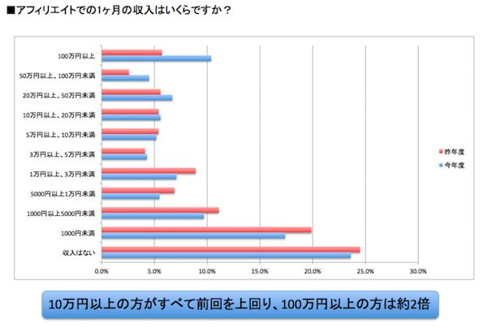
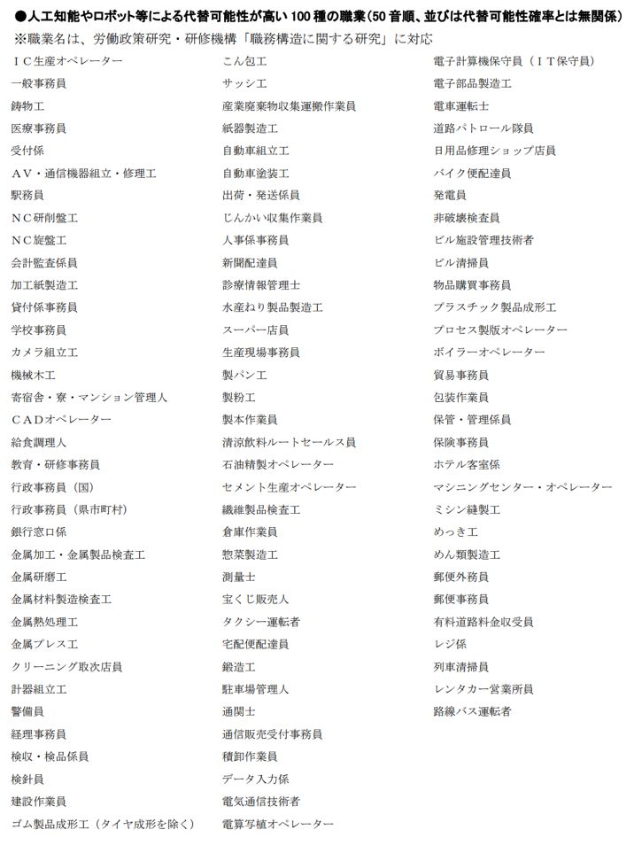
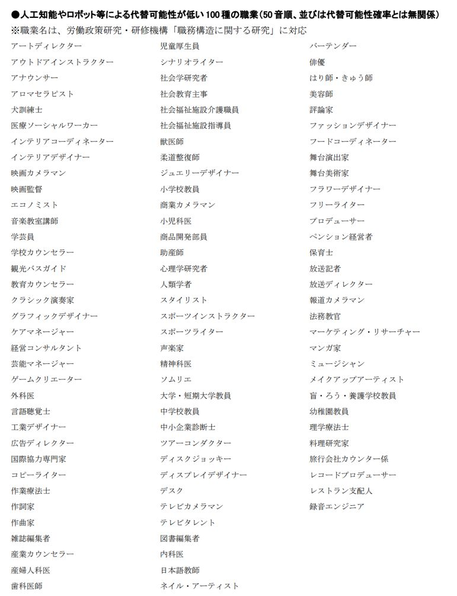

| 21世紀型ライフスタイルマニュアル | |
| 猪飼 智弘 | |
| (2017) | |
猪飼 智弘
こんにちは、猪飼と申します。
『21世紀型ライフスタイルマニュアル-自分らしく自由に生きる-』
を手に取って頂きありがとうございます。
このマニュアルでは、「時間的自由」「精神的自由」「経済的自由」とは何か？ また、それをどうやって実現するかをメインにしつつ、
・今後、会社や社会にどんな変化が起きるのか？
・どうやって生きたら、あなたは自由で豊かになれるか？
・そもそも、あなたの今の仕事や生活は、どんな意味があるのか。
・あなたが自分らしく自由に暮らす為の方法
そんな事を、お話していきたいと思います。
「時間的自由」「精神的自由」「経済的自由」といっても、小難しくて哲学的な内容ではなく、現実的にあなたの役に立つような情報として書かせて頂きました。
そして、本書をお読み頂いた方だけにダウンロード特典 もご用意させて頂きましたので、こちらもぜひダウンロードしておいてください。
まず、簡単に私自身の自己紹介をしてみたいと思います。
私は現在38歳。名古屋でＩＴ企業を経営しています。
ＩＴ企業経営者と聞いて思い浮かぶのは...
ソフトバンクの孫正義社長や楽天の三木谷社長とかでしょうか。
毎日スーツを着て、朝から夜中までバリバリ働いてそうな、
"仕事大好き人間"や"仕事中毒"をイメージするかもしれませんが...
同じＩＴ企業経営者でも、私はかなり違います。
例えば、ある平日の私の仕事をお話しましょう。
目が覚めたら、コーヒーを飲みながら、テレビでニュースを見ます。
それから３０分くらいかけて1通のメールを書きます。
...これだけ。
あとは、以前から行きたかった寿司屋に行き、書店や百貨店をめぐる。
「あ、これ欲しいな」と思ったものをいくつか買って家に帰ります。
もう1度いいますが、日曜日や祝日の話ではなく、平日です。
正直、こんな日がとても多いです。
私の毎日の生活パターンとして一番多いのはこんな感じです。
【ある日の１日】
9時：起床 スマホでその日のニュースを見ながら朝食
朝食は目玉焼き、ソーセージ、シーチキン、コーヒー
その後しばらくはソファでのんびり
11時：メールチェックして返信
12時：いろんな人のブログ読む
13時：昼食 スーパーでステーキを買って自宅で調理
14時：本屋へ行って面白そうな本を探す
16時：カフェでお茶しながらクライアントとスカイプ
18時：買い物を終えて帰宅、しばらくのんびり
19時：夕食 魚とホタテとエビを焼いて食す
20時：メルマガ執筆 2通
21時：ネットサーフィン、動画鑑賞
23時：深夜会員のスポーツジムへ行き筋トレ
1時：風呂に入り、眠くなったら就寝
と、だいたいこんな感じです。
実は、この「私のとある1日」は私が配信しているメルマガでもお話したことがあり、読者の方には「経営者なのに、自由過ぎる」と驚かれる事が多いです。
私は、もう長い間この様な生活をしてるので、当たり前みたいになってますが、毎日、会社で働いている人からしたら新鮮の様ですね。
先ほどのスケジュールリストを読んでると
「11時：メールチェックして返信」
「20時：メルマガ執筆 2通」
これしか、仕事がありません。
もちろん、365日ずっと、これしか仕事をしないわけではありません。
でも、こんな日が圧倒的に多いのは本当です。
「なぜそれでIT企業経営なんてできてるの？」と思われるかもしれません。
私の行っているITの仕事というのは、主にインターネットを使ったビジネスの事を指します。
インターネットビジネスには、効率の良い収益の上げ方があります。
と言うよりも、インターネットビジネス自体が、他の業種と比べて、圧倒的なリスクの低さや効率の良さが特徴的なビジネスです。
その辺りの事については、後ほど詳しくお話します。
まずは、私の仕事の全体像からざっくりとお話していこうと思います。
私がしている仕事は、次の4つがメインです。
コンサルティング
メール執筆
サイト運営
新規ビジネス構築
この４つのいずれかを、その時の気分だったり、他の仕事との調整や、パートナーのスケジュールと合わせて行う感じです。
コンサルティングは、インターネット上での集客やマーケティングに関するコンサルです。
唯一クライアントさんと直接顔を合わせる事もある仕事です。
日本各地に、旅行や情報収拾をかねた「出張」をすることもあります。
メール執筆は、様々なジャンルのターゲットに向けて、情報発信の為にやっています。
あとの2つは、文字通りです。
IT企業なので、サイトを運営したり、それを使ってビジネスを構築する。
とは言っても、これも実作業というのは、そこまで必要ではありません。
専門技術が必要なことは、外部のプロにパートナーとしてお任せします。
この様なことを、自分で計画を立てて、自分のペースで進めていく感じです。
これは、別に私の自慢話をする為に言っているわけではありません。
21世紀は、私の様な生活を実現するチャンスに溢れた時代です。
その一例としてご紹介させていただきました。
ただし、今後の社会変化によって現れるのはチャンスだけではありません。
次の章では、その辺りの事を少しお話します。
よく「二極化」という言葉を耳にする事があると思います。
これからの時代、今まで以上に賃金格差が生まれるというお話です。
豊かに自由に生きる一部の人々と、彼らのために、AIやロボット、インターネットが作り出す、"仕組み"の中で、パーツのように低賃金で働く人々。
かなり大雑把に言ってしまえば、そんな２種類に世界は分かれていきます。
いきなりこんな話をしてもSFの様に感じられたり、
「会社で人と同じように仕事してれば、安全だから大丈夫」
「会社員としてある程度の給料もらってれば、満足だから」
とか思うかもしれませんが、その会社自体がどんどん変わっていっているという事です。
例えば...
2017年11月13日、みずほフィナンシャルグループ（FG）は、傘下のみずほ銀行の支店など国内拠点の2割に当たる約100店舗を削減し、2026年度末までにグループの従業員を1万9000人減らす方針を発表しました。
さらに注目すべきは、このタイミングで人員削減を発表しているのが、みずほフィナンシャルグループだけではないと言うこと。
三菱UFJフィナンシャルグループは、2023年度末までに9600人分の業務量を削減。
三井住友フィナンシャルグループも2019年度末までに4000人分の業務量を削減すると発表しています。
発表の中では「業務削減」「効率化」だの柔らかい表現を使ってますが、つまり、大規模なリストラという事です。
３大メガバンクといえば、大学生にとっても憧れの就職先でしょう。
銀行へ就職して安心しきってた新入社員達からすれば、頭を叩き割られるような衝撃があったかもしれません。
こんな事が起きた１つの理由は、世界的な低金利政策で利子があまり取れなくなり、銀行が儲からなくなっているからです。
ただ、これだけではなく、もう１つ理由があるのです。
それは、人口知能（AI）や情報技術の発達で人間の仕事が無くなってきていると言う事。
実は、人工知能（AI）やフィンテックと呼ばれる金融技術の発達により、銀行業務の大部分が不要になってしまうと言われています。
人口知能と金融技術が物凄いスピードで発達し、「資金決済や帳簿に、ヒトが不要」になりつつあるのです。
既にインターネット上の振込みや残高照会は、一般的になっています。
この流れが進むだけでも、人間の仕事は確実に減っていきます。
さらに、現在のフィンテック（金融技術）発達によって、銀行を介さずに携帯電話などの端末だけで決済ができるようになり、ブロックチェーンと呼ばれるシステム上の帳簿技術で銀行自体が不要になっていくわけです。
この様に、銀行業務がどんどんスリム化される方向に進んでいます。
つまり、21世紀に入って、完全に新しい仕組みが出来上がりつつあると言うことです。
例えば、インターネットには国境がない為、銀行の外国為替業務も利益がでなくなります。
銀行が、大急ぎでこうした新技術を業務に取り入れたとしても、利益は大幅に縮小され、今まで通り給料は支払えなくなります。
そもそも「人がする業務」自体がほとんど無くなる為、銀行員として人を雇い続ける必要性も無くなるのです。
人工知能や情報技術の発達により、近い将来、多くの日本人の仕事は、ロボットや外国人によって、奪われてしまうという予測があります。
こうした急激な変化が、既に３大メガバンクの業務削減発表として表れているという事なのです。
つまり、今はまだ安定している様に思える会社でも、実は足元がグラグラしている会社が多く存在するという事です。
仕方ありません。
これが今の時代の流れなのです。
一方で、同じようにテクノロジーの発達にうまく乗って、ローリスクハイリターンのインターネットビジネスで成功する個人も増えています。
例えば、こちらはアフィリエイトマーケティング協会が発表した『アフィリエイトプログラムに関する意識調査２０１６』です。

アフィリエイトとは、インターネット上で他社の商品を紹介して、手数料を貰うインターネットビジネスの一つです。
このアフィリエイトというビジネスを行っている人で、無収入の人が23､6％ 、全体の約80％ が月収20万円以下です。
「全然稼げてないじゃないか」と思うかもしれませんが...
そもそもアフィリエイトは、会社員の仕事との両立が簡単なこともあり、
副業感覚で取り組む人が多いビジネスです。
知識経験ゼロの会社員や主婦の方が
「稼げるって聞いて始めたけど、よくわからない」と、すぐ辞めてしまう事も多いゆえに、この様な数字になっています。
むしろ注目すべきなのは、アフィリエイターのうち20％ が月収20万円を超えている、という所です。
さらに言えば、月収が約100万円以上の人が全体の10%もいて、
2015年から2016年までのたった１年で２倍に増えています。
おそらく、この数字は、今後ますます増えていくと思いますし、インターネットを使えば、個人であったとしても、チャンスがいつでも手に入る時代になりました。
ある程度、真面目に取り組めば、ほぼ必ず結果がでるビジネスモデルである上に、知識経験ゼロの人にとっても、敷居が低く、素人の方向けのノウハウもどんどん増えているからです。
詳しくは、こちらのダウンロード特典 で、結果が必ずでるビジネスモデルについてお話しています。
この章のお話からは、
あなたの会社や仕事が無くなってしまう可能性。
時代変化に上手に乗って、自由で豊かな生活を実現する人もいる。
例えば、自由で豊かな生活の1例が、私の日常。
この辺りだけ覚えておいてください。
現在の自由で豊かな生活をお話しすると羨ましがられる事も多い私ですが、20代の頃は、完全に今と真逆の生活をしていました。
しかし今振り返ってみれば、20代の頃の過酷な日々のおかげで、いまの「時間的自由」「精神的自由」「経済的自由」を獲得した生活があるとも言えます。
そこで、私がIT企業を経営する様になる前、20代の頃についてお話したいと思います。
まずは、簡単に学生時代の事からお話しようと思います。
IT企業経営者とか、コンサルタントとかいうと、
「学生時代から優秀だったんでしょ」
「スポーツができてリーダシップを発揮してそう」
とか勘違いされる人もいる様なので言いますが...
学生時代は、どこにでもいる、本当に普通の学生でした。
ビルゲイツの様に、ハーバード大学在学中にプログラミングに夢中になってそのまま中退したとか、スティーブジョブズのように、いきなりインドを放浪したとか。
孫正義氏の様に、坂本龍馬に憧れて16才で高校中退したとか...そんな逸話もありません。
勉強は好きでもなかったですし、特別できたわけでもありません。
スポーツだって、そんなにハマったわけでもなく、ほとんどの学生と同じように、この頃にアルバイトを始めました。
でも何となく始めたアルバイトが、今にして思えば、確実に私の今の人生に繋がっています。
私の「勤め人」としての生活は、学生時代のアルバイトから始まります。
時給でお金を稼ぐ仕事なので、働けば働くほど給料は増えます。
「労働とは何か」「仕事とは何か」などは考えもせず、その頃はただお金を稼ぐ為だけの理由で働いてました。
自分の時間を切り売りしてるわけです。
色々なアルバイト経験をしたのですが、その中でも印象に残っている仕事がカラオケバーです。
これが、1番衝撃的な仕事でした。
始めた理由は単純に好奇心です。
カラオケバーでの仕事は夜中がメインでしたが、夜に働くというのがそもそも若い頃の私にとっては珍しかったです。
勤務時間は、大体夕方18時から翌朝6時頃まで、1日10〜12時間働き通しです。
夜勤なので生活リズムが完全に昼夜逆転し、疲れもなかなかとれません。
疲労困憊のままお店に出勤して、すぐ開店準備をします。
それがある程度終わったら、お客さんが入るまでのわずかな時間に、急いで、まかないを食べる。
ちなみに、まかないと言うのは、お店が用意した従業員用のご飯の事です。
それから、お客さんが来店し始めたら接客。
飲みたくもないお酒を、付き合いで飲まなければいけない事もしょっちゅうでしたし、さらに雑務などの肉体労働もあります。
ようやく仕事が終わるのが、朝6時。
クタクタになりながら、眠たくてぼーっとしたまま家に帰ります。
疲れすぎと早く寝てしまいたいのが相まって、ご飯すら食べずに寝る事もしばしば。
そして、夕方ごろ目を醒ますと、また前日と同じ事の繰り返しです。
これを毎日、毎日、繰り返してました。
休みは、週1日しかありませんでした。
今考えると、異常です。
この様な感じで、私の20代は、睡眠時間以外のほとんどの時間を仕事に奪われ、気力も体力も全然残っていませんでした。
20代の若い頃は、普通なら楽しい盛りです。
同年代の友人は、女の子と遊びにいったり騒いだりで、色々と楽しそうな事が多そうでした。
一方の私は、時間も体力も完全にカラオケバーへの「お勤め」に奪われて、
遊ぶどころの話ではありません。
時間があったら、ちょっとでも休んで次の仕事に備えたい。
好奇心から始めたカラオケバーの仕事でしたが、よく考えてみれば、ただの「労働」です。
雇い主の決めたスケジュール通りに働いて、お客さんとの付き合いで飲みたくもない酒を飲んで、酔っ払って、夕方から翌朝まで働きづめで、ヘトヘト。
さすがにこの生活が続くと「俺は、何の為に毎日働いているんだ？」と、疑問を感じ始めます。
もちろん、納得して入った世界だったので、文句はありません。
しかし、疲れはどんどん溜まるわけです。
この辺りから、自分は一体何のために働いてるのか？と少しずつ疑問を持つ様になったのです。
そんなある時、自分の時給を計算してみると...何と、たったの1000円でした。夜通し働いてるし、同年代の人よりは多めに貰っている筈だと思っていましたが、実労働時間がかなり長いだけで、時給は全く高くなかったのです。
「たった時給1000円で、自分の人生をこの仕事に捧げてるのか...」
これに気づいた時には、愕然としました。
雇い主から与えられる仕事をこなすだけの毎日で、精神的にも時間的にも、完全に拘束されている。
お金だってそんなに貰えるわけではない。
一切の自由がない生活をしていました。
「俺は、毎日何をやっているんだ...」
そんな風に思う気持ちが日増しに強くなり、自分の置かれてる状況について冷静に考え始めました。
そこでまず思ったのは、何とかして、この苦しい生活から抜け出したいという事。
とにかく自由になりたい、時間を好きな様に使いたい。
これが「時間的自由」と「精神的自由」です。
それだけなら仕事を辞める事でほぼ実現できますが、お金が続きません。
一人暮らしをしてたので、家賃を稼がなければいけませんし、他にも食費や光熱費やら色々お金が必要です。
かと言って、また同じ様な仕事を始めてしまえば、結局自由の一切ない生活に逆戻りです。
つまり、「時間的自由」と「精神的自由」を得る為には、「経済的な自由」も必要になる、という結論に至りました。
カラオケバーの他にも、色々なサービス業で働きましたが、結局同じ。
時間と体力全てを犠牲にして、少ないお金を受け取るだけ。
精神的にも時間的にも経済的にも、自由はありませんでした。
「そんなに大変なら、会社に就職すればよかったのでは？」
と言われる事もたまにありますが...会社員だって本質は同じ。
私の弟は上場企業のサラリーマンをしていて、彼が毎日どの様な生活をしているのかをよく知っています。
学生時代からの友人は、ほぼ全員会社員ですし、私の勤め先にも、お客さんとして会社員が大勢来ます。
彼らの生活も、その頃の私の生活と実質的には同じでした。
毎日朝から夜遅くまで働き、疲れて会社の愚痴をひたすら言う。
「精神的自由」「時間的自由」「経済的自由」とはほど遠い生活です。
だから私は、「勤め人」という方法以外で「経済的自由」を実現し、
「精神的自由」と「時間的自由」を獲得する為の様々な行動を開始しました。
そして今、３０代になった私がこれまで何をして、どの様に自由な生活を手に入れたのか。
この辺りは、また後ほど詳しくお話します。
次章では、日本の社会や企業が今後どう移り変わっていくのかについて、お伝えします。
野村総研の発表では、今後10〜20年の間に日本国内の労働人口のうち49％ が、人工知能（AI）やロボットによって代替される可能性が高いといわれています。
いきなり言われても、あまり現実味が無いかもしれないので、具体例をあげてみます。
前に、銀行業が縮小していく事についてお話しましたが、それに少し関連する話です。
地方銀行である肥後銀行が、富士ソフトと協力して、人口知能（AI）を搭載したロボットによる窓口業務の補助を開始したというニュースがありました。
現時点では投資信託58種と金融用語の説明で、人間の銀行員を補助するだけという事です。
しかし、囲碁や将棋の世界では、最高峰のプロ棋士達をAIプレーヤーが打ち負かす時代にまでなっています。
このまま技術発展が続けば、銀行業務を補助するロボットが、銀行員の仕事を全てこなす様になるのは、そんなに遠くないでしょう。
ちなみに肥後銀行は、この人工知能（AI）による業務補助を行う店舗を順次増やす計画だと発表しています。
複雑な金融商品の説明すら人口知能がやってのけるのですから、携帯ショップ、コンビニ、家電量販店、スーパー、接客販売業で、多くの人がいらなくなってしまうのは容易に想像できます。
調理を行うロボットが全面的に導入されれば、ファーストフードをはじめとする飲食店でも、人はいらなくなります。
会社内の事務作業や管理業務も、恐らくほとんどが人工知能で置き換え可能でしょう。
ネイリストやキャビンアテンダントの様な憧れの仕事でさえ消えると予測されています。
「そんなの、いつの話だよ！」なんて思うでしょうか？
今言った仕事は、全てあと6年で消えると言われています。
さらに10〜20年経つと、運転手、通訳、内科医、外科医、弁護士、会計士、プログラマーまで消えてしまうと予測されています。
また、表に出ていない職業だからと言って、消える可能性が無いわけではありません。
例えば、コンピュータグラフィック技術の発達が続けば、モデル、俳優、女優業なんていらなくなると言われています。
理想の容姿を持ったキャラクターを自由に作れてしまうからです。
人工知能の発達と組み合わされば、タレント業自体が無くなり、人工知能同士の面白おかしいバラエティ番組が放送される日も近いかもしれません。

総務省が発表したICT（情報伝達技術）の未来年表を見てください。
この未来年表によると、多くの仕事が人工知能やロボットに代替されてしまうと書かれていますが、注目してほしいのは、
「2021年AIが東京大学の入学試験に合格」と言う予想です。
大学入試問題を解くには、これまでの機械が行ってきた単純作業とは、違った能力が必要になります。
膨大な知識の組み合わせ
抽象的な概念の理解
複雑な課題解決
尋常ではない計算能力
思いつくままに並べてみましたが...、これは、そのまま「仕事の能力」に直結します。
物凄く、単純に言うと、「東大卒レベルの頭脳がする仕事は、全部AIがこなしてしまう」という事です。
でも、ほとんどの会社の仕事は、別に東大卒でなくてもできてしまいます。
実質的に人工知能は、既に会社の仕事のほとんどをこなす能力を持っており、あとは企業が導入するための準備待ちと言ってもいいのです。
すでに、コールセンター業務の中では、応対内容の文字起こしや、お客さんの感情を読み取ったり、お客さんのお話をもとに次の会話の流れを選択する能力のある人工知能が開発されている様です。
この流れが続いても、あなたの仕事は大丈夫だと思えるでしょうか。
人工知能（AI）とロボット技術の発達で、恐ろしい勢いで仕事が消えてゆく。
それが今後の6年〜20年の間で起こる事実です。
冒頭でもお話ししましたが、将来的に日本の労働人口の49％ は、人工知能ロボットで代替可能になるという事です。
もちろん、これはあくまでも予測です。
実際にその職業を行う人間がいなくなってしまうかどうかは、時代や様々な社会要因が関係します。しかし、特殊な仕事でない限り安泰では無いという事は確かです。

次は「将来無くなる可能性が低い職業」一覧をお見せします。
テクノロジーの発達によって無くなると予測される職業がたくさんある一方で、ここに並ぶ様に今後も人が必要とされる職業もある。
職業によって、今後二極化が起きるという事です。
今回は、この「社会の二極化」と「ホワイトカラーの産業革命」と呼ばれる、
20代、30代会社員の方の人生にかなり関係の深い話です。
具体的には、
インターネット技術の発達で、会社業務がスリム化される
グローバル化で、外国人とも仕事を取り合うようになる
職業と求人のバランスが崩れることで労働単価が低下する
この３つの話をしていきます。
アメリカでは大手ビデオレンタル会社の「ブロックバスター」が、ネット配信サービスに顧客を奪われ倒産しました。
「ブロックバスター」は、日本だとTSUTAYAにあたります。
現在は、映画やドラマをインターネット上でダウンロードし、それをテレビで観る事は、至って普通の事になりました。
すると、ディスクを扱う企業の需要はどんどん無くなっていきます。
音楽業界も同じで、CDショップも少なくなります。
それを見越してTSUTAYAでは、DVD、CD、Blu-rayの宅配や動画配信見放題などを始めました。
サービスをインターネット上に移せば、TSUTAYAという企業は潰れないかもしれません。
しかし、店舗は不要になり、業務はスリム化していきます。
社員もどんどん減るでしょう。
この様に、銀行やTSUTAYAのような業務のスリム化は、確実にほとんどの企業で起こります。
そうしなければ、会社が生き残れないからです。
つまり、会社が必死で生き残ったとしても、人の仕事は無くなるという事です。
数年後に、あなたの仕事が無くなっている可能性だって低くありません。
さらに、グローバル化が進んでいく事で、外国人とも仕事を取り合わなければいけなくなります。
"オフショア開発"という言葉を聞いた事はないでしょうか。
これまではIT分野で注目されてきた開発手法です。
プログラミングという仕事は、インターネット上で全て完結させてしまう事が可能なのです。
つまり、プログラマーの仕事を、中国人、韓国人、インド人、ミャンマー人に外注として依頼をする開発手法です。
特徴は、とにかく圧倒的に人件費が安くあがる事です。
さらに年々、外国人労働者のレベルも上がっています。
経営者からすれば「仕事さえしっかりと行ってくれれば、誰がやっても同じ」
外国人に安い人件費で、喜んで仕事をしてもらえるのであれば、そちらの方が良いのです。
インターネットやコミュニケーション技術の発達で、遠隔地との業務連携がどんどん簡単になっています。
今はまだ、SE、コールセンターなど分野が限られていますが、そのうち経営者と役員だけ日本人で、あとはほとんど海外で業務が行われるという事だってあり得るのです。
現在では、
人工知能（AI）の発達
インターネット世界の発達
グローバル化
が同時に起きています。
すると、会社のサービスや業務はどんどんスリム化される上に、
「外国人」「人工知能（AI）」両方が日本人から仕事を奪い始めます。
これによって起こるのは、
「仕事、職業が無くなる」という事だけではありません。
「労働者の需要が低くなり、報酬が安くなる」という、"労働単価の低下"まで起きてしまうのです。
価格というのは、需要と供給のバランスで決まります。
もちろん給料も同じです。
求人と志望者のバランスで決まります。
例えば、アパレル業界は人気が高く志望者が多いため、企業は給料を低く設定します。
それでも人が集まるからです。
これと同じ事が、今後全ての職業に対して起きるという事です。
産業革命時に単純作業を行う機械が発達し、工場労働の大部分をロボットが行う様になると、多くの工場労働者が職を失いました。
さらにその失業者が似たような職を求めて殺到する為、賃金の単価自体が下がったのです。
現在起きている、人工知能（AI）の発達とグローバル化は、ホワイトカラー（会社員など頭脳労働を行う人たち）に、同じような変化を起こすと予測されています。
これを、「ホワイトカラーの産業革命」と呼ぶ研究者もいます。
仕事自体が不要になってしまい、失業者や就職難民が大量発生する。
残った職業に対する需要と供給のバランスが崩れ、労働単価が低下する。
こんな事が、工場労働者などの肉体労働中心の職業ではなく、
会社員、銀行員、弁護士、会計士、税理士、医者など、頭脳労働者である、ホワイトカラーの職業に対して起きてしまうのが、
「ホワイトカラーの産業革命」です。
「ホワイトカラーの産業革命」の特徴は、これまで比較的安定、高給だった職業も危険だということ。
グローバル化によって、優秀な外国人と仕事を取り合う上に、さらに優秀な人工知能によって仕事が置き換えられるわけですから、何となく予想がつくでしょう。
これまでと同じ仕事をしているだけでは、会社員の労働単価（給料）もアパレル業界の様にどんどん低賃金化していってもおかしくありません。
すでに医者や弁護士の世界でも、AIがビッグデータを元に、高度な診断、判断、アドバイスを行い、仕事を奪いはじめています。
計算能力と判断能力を組み合わせれば、銀行員、会計士、税理士の業務だってほとんどがAIに置き換えられます。
Googleの無料翻訳のレベルを見れば、通訳が無くなっても不思議じゃない筈です。
これまで社会で、「一生安心」「社会的地位が高い」と思われていた仕事ですら、どんどん労働単価が下がっていくのです。
上司はずっと会社勤めをしてきて、同僚もあなたと同じ様に毎日働いていたら、危機感を感じるのは難しいかもしれません。
今回は、これまで「会社員をしていれば安心」という幻想を支えてきた、
終身雇用と年功序列についてお話しします。
まずは、下の表を見てください。
■1992年：ホンダ自動車が役員の年功序列制度を廃止
■2002年：ホンダ自動車が一般社員も年功序列制度廃止、成果型賃金制度を導入
■2004年：日産自動車が年功序列制度を廃止
■2014年：日立製作所が年功序列制度を廃止
■2015年：パナソニックが年功序列制度を廃止
■2015年：ソニーが年功序列制度を廃止
1992年に、すでに役員の年功序列を廃止したホンダ自動車は、かなり早い段階で時代の変化を読んでいたのかもしれません。
2000年代に入ると、大企業が次々に年功序列制度を廃止していきます。
2015年には「終身雇用、年功序列制度の生みの親」でもあるパナソニックまでが年功序列制度を廃止してしまいました。
ソニーでは、この給与制度の変更で6割の社員が減給になったとも言われています。
多くの企業が経営状況の変化や、世界的な競争力強化を名目にしています。
しかし、真実はそれだけでは無いのです。
一昔前の高度経済成長や、人口の増加が顕著だった時代は、企業が大量の労働力を確保する必要がありました。
つまり、昭和という時代だったからこそ、成り立った終身雇用と年功序列制度だったのです。
しかし、上記の表を見てわかる通り、21世紀に入り、そのやり方に無理が生じてきた為、年功序列制度を廃止していったというのが実態なのです。
終身雇用と年功序列制度の始まりは、
パナソニック（旧松下電工）の松下幸之助にあると言われています。
1929年に世界恐慌が起きると、世界中で企業が倒産しました。
日本も例外ではありません。
多くの会社の倒産や工場の操業停止により、就職できない若者や失業者が日本中に溢れました。
それでも松下幸之助は、自社工場で働く人達に対して、「生産が減っても、従業員は一人も減らさない」と言い、経営状態が苦しい中も雇用を守りました。
これにより、パナソニック（旧松下電器）は、「社員を家族のように守る会社」という信頼を獲得し、その後の発展に繋がったとされます。
...こうお話すると、何だか年功序列と終身雇用が、素晴らしい美談から生まれた様に聞こえてしまいますが、実際はそうでもありません。
松下幸之助の話は美談ですが、多くの企業がこの美談に感動して年功序列と終身雇用を取り入れたわけでは無いという事です。
最大の理由は、急速に発展する会社の人員確保です。
年功序列と終身雇用の本格的な始まりは、世界恐慌の約20年後。
1950年頃からと言われます。
1950年頃は、まだ戦後間も無く、戦後復興関連の仕事がとにかく大量にありました。
さらに、日本では1955年から1973年の約20年間、経済成長率が年平均10%という世界的にも驚異の経済発展を遂げました。
このあと1974年に初めて経済成長率がマイナスにはなりますが、また1979年以降は、不況を乗り切って安定成長が続きます。
この安定成長がいつまで続くかというと...大体1990年前半です。
経済が急速に発展し続ければ、企業はイケイケドンドンになるわけです。
とにかく仕事がたくさんあって、やればやるほど儲かる。
日本は人口が限られていますから、何とか社員数を確保する必要があります。
1度入社したら、ずっと雇い続けて家族の様に面倒をみる。
だから安心して、会社の為に人生を捧げてくれ。
よほどの事がない限り、順調に出世して自動的に給料も上がるから。
こうして生まれたのが、終身雇用なのです。
そして、もう一つの理由はビラミッド型の人口構成。
社員が歳をとっても辞めずに、高い給料をもらい続けたら、めちゃくちゃ金がかかります。
経済が成長しても、会社にとって大きなコストです。
それを補う為にどうするかというと...、
若手が安い給料で、死ぬほど働いて利益を出すわけです。
若手社員から会社と先輩社員への「滅私奉公」です。
滅私奉公とは、私利私欲を捨てて、主人や公のために忠誠を尽くす事。
要するに、昔で言う奴隷みたいなものです。
これは、若手社員の数が多くないと維持できません。
昔は年齢が下がるに従って人口が増える「ピラミッド型」人口分布でした。
だから、年功序列が成り立ったのです。
「右肩上がりの経済成長」と「若手を無尽蔵に集められる人口ピラミッド」があってこそ、成立していた終身雇用と年功序列。
これが、日本特有の「滅私奉公」「愛社精神」を生み出します。
企業側も、マインドコントロールを自覚していた部分もあるでしょう。
新入社員教育という名目です。
更に言えば、この時生まれた「愛社精神」「滅私奉公」が、現代になって「社畜精神」になっているわけです。
当時は終身雇用と年功序列があったからこそ、「愛社精神」や「滅私奉公」を信じて働くメリットが、多少はありました。
しかし、1990年代を境に、経済成長は終わってしまったのです。
最近、景気が回復したといっても...
その多くは、「技術発展とグローバル化」を上手に利用して、業務とコストをスリム化した企業の業績回復によるものだったりします。
企業が人を雇い続ける終身雇用をやめ、賃金単価の安い非正規雇用者が大量に増えています。
昭和の経済成長を支えた終身雇用をやめたことで、業績が回復している部分もあるのです。
さらに最近は少子化が進み、人口分布が「逆ピラミッド型」に近づいています。少ない若手が人数の多い先輩を支える...これが続けば無理がでます。
これらが、年功序列を維持できない理由に繋がっていくのです。
ご両親や会社の尊敬する上司に「若いうちに苦労すれば、必ず報われる」と言われると、何となく信じてしまうのではないでしょうか。
確かに、仕事で身につけた人生経験や仕事の本質的なスキルは一生あなたを支えるでしょう。
でも、ご両親や年配の会社員と同じ様に報われるかと言うと、それは違います。
先ほどの話を思い出してください。
「社会人なら自由を犠牲にして会社のために働くのは当然」
「会社の為に一生懸命働けば、必ず報われる」
こんな「社会人の常識」の元になったのは、「滅私奉公」や「愛社精神」の考え方でした。
戦争直後から昭和、平成初期までの多くの会社では、新入社員にこうした考え方を叩き込む、悪く言えばマインドコントロールのような社員教育が、積極的に行われました。（そんな会社は今でもあるかもしれません）
会社が社員を鍛えてくれる師匠、守り育ててくれる親のような存在と思わせる事で、終身雇用と年功序列を導入していた会社に社員を馴染ませ、一丸となって働かせるシステムを強化していたのです。
ただ、日本の会社独特の価値観である「滅私奉公」「愛社精神」ですが、私は必ずしも悪いとは思っていません。
終戦直後、昭和から平成初期まで、「滅私奉公」「愛社精神」がサラリーマン一人一人を、迷う事なく仕事に向かわせ、日本中を豊かにした部分があるからです。
「終身雇用」と「年功序列」がうまく機能している頃は、若い頃苦労しても、自分が歳をとって順当に出世さえできれば、比較的ラクをしながら高い給料を貰えました。
つまり、働く側にとっても多少はメリットがあったのです。
ご両親や先輩社員は、まさにその「古き良き時代」の経験者であったり、その時代を生きた人達の考え方を直接叩き込まれたコピー人間です。
しかし、21世紀に入った現代社会では、このシステム自体が時代に合わなくなり、機能しなくなっただけです。
さらに言えば、「年功序列」と「終身雇用」のメリットが無くなっているにも関わらず、「滅私奉公」「愛社精神」という義務や負担だけが残ってしまっているのです。
終身雇用と年功序列がないのに「愛社精神」と「滅私奉公」だけ残っている。
メリットがないのに、自分を犠牲にして会社に捧げている。
これが現代の社畜と言ってもいいのです。
こんな風に考えると、ちょっと暗い気持ちになりますが、たいした餌も与えられずに、「会社の為に自分を犠牲にするのは正しい事である」と、会社に飼いならされてしまっているのが「社畜」なのです。
今のようにインターネットが発達してない昭和から平成初期には、個人が「精神的自由」「時間的自由」「経済的自由」を獲得するのは、よほどの才能や運がなければ、現実的に無理でした。
今と比べると「会社員でない事のリスク」も圧倒的に高かったのです。
そんな時代に生きていれば、私だって会社員になったかもしれません。
でも、21世紀に入った現在では、昭和や平成の初期とは事情が全く違います。
終身雇用と年功序列は、戦後から昭和、平成初期の日本にだけ成立して通用した、特殊な仕組みです。
この"特殊な仕組み"があったからこそ成立した、「愛社精神」「滅私奉公」「会社にいれば安泰」という考え方は、
既に現実味を失っているという事は理解すべきでしょう。
今の時代は、インターネットなどの技術の発達により、
個人でもローリスクハイリターンでビジネスを展開するチャンスが溢れています。
こんな風に、時代が変わってしまったことをよく認識して、新しい時代にあった、会社との距離感を掴んでいくほうが、幸せに近づけるはずです。
仲の良い同僚も、尊敬する上司だって...
会社が不要と判断したら、あっという間にクビです。
「尊敬する上司の為に、仕事を頑張る」
「今の会社で仲間と一緒に働く事に仕事のやりがいを感じる」
というモチベーションもあるかもしれません。
会社員をする事で得られる貴重な経験の１つは、人間関係だと思います。
サラリーマン人生で知り合った人との付き合い方や経験、他にも様々な事を学べると思います。
私も、そんな会社の良い部分を否定するつもりはありません。
でも、「好きな仲間がいるから、彼らと一緒に会社に依存してても大丈夫」
という事にはならないと思うのです。
大切なのは「バランス」と「何を自分の人生の軸にするか」。
会社の人間関係が大切でも、それが、「会社の為に自分を犠牲にするべき」という考え方に直結するのは不健全です。
会社の仲間が好きである事、一緒に仕事をしていて楽しい事と、会社がどんなものであるかは、全く別問題です。
あなたも同僚も上司も「会社に雇われた人間」。
部下思いの上司でも、会社の意向に反することはできませんし、チームワークを発揮できる仕事に欠かせない同僚も、会社が不要だと判断すれば、いつでもクビになります。
あなたも同僚も上司も、いつ異動になるかはわかりません。
それだけでは無く、あなたに対して嫌がらせやパワハラをしてくる上司や同僚がいつ現れてもおかしくはないのです。
今の会社の居心地が良いからと油断していれば、もし仮にそうなってしまったとしても、あなたは我慢して会社にい続けるしかありません。
極端な話をしてしまうと、株主からすれば、経営者すら誰でもいいのです。
株主は、「出した資金に見合う見返りがあるか、ないか」しか問題ではありません。
社長と社員が誰であっても利益さえ出ればいいのです。
日本でも、企業買収による経営の合理化で社長が交代させられたり、社員が大量解雇されるのが珍しいニュースではない事から、おわかりになると思います。
数年前に、ホリエモンや村上世彰氏の企業買収が話題になった時は、
「会社は誰のものか？」という議論が白熱しました。
結論から言ってしまえば、議論の余地なく「株主のもの」です。
株主が資金を出資して、社長は利益を出して株主に還元する。
社員は、それを実現する為に雇われているだけなのです。
つまり...
「会社は、社員に対して、与えた仕事をこなす代わりに給料を払うという契約しているだけである」というのが正しい答えです。
会社員は、会社に将来を守って貰えるわけではありません。
「会社に必要な仕事がある」
「会社がその仕事をあなたにやってもらう必要がある」
その間だけ、給料を支払ってもらえるという事です。
これは、資本主義として当たり前の事なのですが、頭ではわかっていたとしても、「リアル」には理解していない人が多いのです。
もし、あなたが会社で理不尽な事、辛い事があったとしても、我慢を続けているのだとしたら、大変な事だと思います。
「会社に勤めないと生きていけない」
「辛いことがあっても我慢して入れば、会社が自分を守ってくれる」
そう思って「時間的自由」「精神的自由」を犠牲にし、「経済的自由」を得るこ事もできない。
さらに、ここまでお話したような時代と会社の変化を感じてはいても...「会社員をやめて生きていくなんて絶対無理」と思ってしまう。
こんな風に、会社で仕事をして毎月の給料を貰っていると、多くの会社員の方が無意識に「お金は我慢料」「お金は辛いことをした対価」という考え方を抱いてしまうかもしれません。
これが
「苦労して働くことが正しい」
「苦労しなければお金を受け取ってはいけない」
という「労働信仰」のようなものに繋がります。
そして、この労働信仰こそが、
「自分の自由（時間精神経済）を会社に捧げる」
というおかしな常識に繋がってしまいます。
だから、多くの会社で...
風邪を引いても出勤するのは当然
有給は遠慮してとるもの
副業をしては駄目
会社の目標達成の為なら、健康を削って必死で働く
残業代を請求しなくていい様に、うまいこと工夫する
社会人がプライベートを犠牲にして会社の都合に合わせるのは当然
こういう事が常識の様に行われています。
会社は利益を出す為だけに存在し、会社員はそれを遂行する為に雇用という契約を交わしているだけに過ぎません。
この関係性が続く限り「時間的自由」「精神的自由」「経済的自由」が程遠いのは当たり前です。
話を「お金」の事に戻しますが...
「お金」＝「我慢料」ではありません。
お金は価値を客観的に測るための道具でしかないのです。
つまり、別に苦労や我慢をしなくても、価値を提供できるのならば、対価としてお金を受け取って良いのです。
そう考えてみれば、前述の通り、あなたの我慢や会社の理不尽の大部分は、お金（＝給料）を受け取る為に「しなければいけない事」では無いと思います。
あなたがきちんと「価値ある仕事」を会社に提供していれば、それ以上の犠牲を払う必要は本来ないのです。
こう考えて、会社との距離感を見直していけば、会社員のままでも少しは、自由を取り戻せるかもしれません。
「会社員をしながらでも、自分の自由を取り戻していこう」
という考えを進めていけば、必要以上に有給取得を遠慮したり、残業代も有耶無耶にしなくて済むわけです。
家に持ち帰る仕事を減らす事だって、風邪を引いたら休みを取る事だってできます。
もちろん、現実的には、上司や同僚の空気を読んでしまい難しい事もあるかもしれません。
ですが、あなたなりに会社との距離感を見直し、できる事を少しでも実践していく事が、これからの時代は必ず必要になっていきます。
お金と言うのは本来、「価値の対価」ですから、会社に自由を捧げて、我慢や苦労をしなければ得られないものではありません。
労動と言う時間の切り売りで無くとも、「価値の提供」さえできればお金は稼げるのです。
この当たり前だけど、忘れがちな感覚を取り戻し、社会やビジネスを見直してみれば、色々なチャンスが見えてきます。
それが本当の意味での「時間的自由、精神的自由、経済的自由」の獲得に繋がるわけです。
だからと言っていきなり会社を辞めて、自分の力だけで生活費を稼ぐ必要はありません。
私が行っているインターネットビジネスなら、きついスケジュールや納期に縛られる事なく、自分の都合で空いた時間にやりたいだけ進める事ができます。
まずは、副業として始めてみる事をおすすめします。
もし、すぐにうまくいかなかったとしても何も問題ありません。
資金はほぼ不要ですから、損害もなく、別の方法を試せばいいだけです。
私もそうでしたが、やればやるほどコツがわかり、インターネットでお金を稼ぐのが、簡単に楽しくなっていきます。
こういう話をすると、会社員の方によく言われるのが、
「うちの会社って副業禁止なんですよ」
「表向きは禁止にしてないけど、バレたらかなり居づらいです」という話。
勤務時間以外のプライベートで、個人がお金を稼ぐことを禁止するなんて、私からすれば「本当に恐ろしい独裁者のような発想」です。
そんな独裁者の言いなりになる必要はありません。
ただ、会社を今すぐ辞めるわけにいかない場合は、内緒でやればいいだけです。会社に遠慮したところで、本当に困った時に助けてくれるわけは無いのですから。
自力で収入を得る手法については、こちらのダウンロード特典 でお話しています。
会社員である以上、自由がある程度制限されてしまうのは避けられないかもしれません。
私の個人的感覚としては、本当に自由で豊かな暮らしをしたいと思ったら、会社員は辞めてしまった方がいいと思っています。
「会社員を辞めたら食べていけない」と思うかもしれませんが、具体的に考えてみると、会社員程度の収入を維持するのはそれほど難しい事ではありません。
例えば、１日にたった2個、1万円利益が出る商品が売れれば...
それで月収は60万円です。
インターネット人口が1億人以上いる日本で、1日にたった2個です。
そう考えると簡単そうに思えてきませんか？
実際、インターネットの力を使えば全然難しい事ではありません。
あなたの様な個人も、21世紀の時代変化にうまく乗れば、これまで一部の人しか手に入れる事ができなかった、豊かで自由な生活を手にする事も可能なのです。
むしろ、終身雇用と年功序列が崩壊し、メリットも無いのに会社に自由を捧げる「社畜」をやめるいい機会だと思って、新しい可能性に目を向けるのも良いでしょう。
何度も私の話になってしまいますが...
１人でIT企業を経営している私の日常には、ストレス自体がほぼありません。
よくあるサラリーマンの風景と言えば、
会社が終わったら、飲み屋で愚痴ばかり言い、
その会社以外では通用しないかもしれない作業をして、「いつかクビになるんじゃないか...」と心配し続ける。
嫌な上司や面倒な同僚とうまく付き合う為に神経をすり減らす...。
こういうストレス生活とは無縁です。
例えば、この文章は、熱海の温泉で書いています。
コンサルの仕事でクライアントに会うために、名古屋からはるばるやってきましたが、実際に仕事をしているのは数時間だけ。
あとは、興味のある名所に行ったり、美味しいものを食べて、温泉に浸かって英気を養います。
そして今は、ゆったりくつろぎながらこの文章を書いています。
先ほども言いましたが、だからと言って、
「明日すぐ辞表を提出して会社を辞めてください！」
というお話ではありません。
会社を辞めるには、辞めても生きていけるだけの「スキル」か「資産」が必要です。
まずは、それが自分にあるのかどうか。
このまま会社員を続けるだけで「スキル」と「資産」を得られるかどうか。
そこを冷静に考えてみましょう。
会社で働けば「社会を知る」「社会と触れる」という意味で、
たくさんの価値がある経験ができると思います。
しかし...
インターネットが発達して、どんどん会社とその業務がスリム化していく中で、今行っている仕事だけで本質的な仕事のスキルを身に付けられるかと言うと、なかなか難しいと思います。
これからの時代、価値の対価としてのお金を受け取る為には、
「本質的に通用するスキル」を勉強する必要があるのです。
例えばですが...
個人でインターネットビジネスをして、ネット上で「物を売るコツ」を掴んだ人が、企業にお願いされて「ウェブマーケティングコンサルタント」としてお金を稼ぐ。
こういう人を「本質的なスキルを持った人」というのです。
ユーチューバーになって、年収が億単位になった小学生がアメリカにいます。日本にも、自分が好きな情報を発信して、年収数百万円から〜数千万円を稼ぐ主婦や会社員がいます。
ただの主婦や子供が好きな情報を発信してお金を稼げてしまう事など、これまでの時代であれば、ありえない事でした。
しかし21世紀という新しい時代には、「普通の人が発信する情報」が毎月使いきれないほどのお金を生み出したりします。
この「情報をお金に変えるスキル」が、これからの時代に必要な本質的なスキルなのです。
アフィリエイターや、ユーチューバーとして成功する人々にはそれがあります。
それは、「世界中のインターネット環境につながる人達へ、ほぼ制限なくアプローチできる」という強みが、インターネットにはあるからです。
恐らく日本で会社員をしている人の中には、そういう情報にお金を払っても良いと感じる人が少なからず存在するでしょう。
インターネットを使えば、そんな人達にもアプローチできてしまうのです。
次は「資産」があるかどうかです。
資産と言うと、家や車があると思うかもしれませんが、これは本当の意味での資産と言えません。
21世紀型ライフスタイルを実現する為に必要な「資産」の定義は、
「あなたのポケットにお金を入れてくれるもの」です。
（この辺りは「金持ち父さんと貧乏父さん」という書籍に詳しく書かれています。）
家や車など、常識的に資産だと思われているものは、修繕費や維持費がかかって利益は産みません。
そういう意味では、ただの負債でしかないのです。
本当の「資産」と言えるのは、例えばマンション経営や駐車場経営の様なものです。
でも、現実的にこれらの資産を持つ為には、かなりの資金が必要になります。さらに、立地を間違えるなどして失敗すれば、その資金も全て無駄になります。
それが...
インターネットを使えば、このような「お金を生み出す資産」もローリスクハイリターンで持つ事ができるのです。
サイトをたくさん作って自動販売機の様にお金を発生させ、毎月の生活費を稼ぐ人だったら、日本だけでも数えきれないほどいるでしょう。
さらに凄いのは普通の仕事と違って、一度仕組みを作ってしまうと、あとは"ほぼ放置"で収入が発生し続けることです。
もちろん、全く何もしなくて良い訳ではないです。
多少のメンテナンスやフォローのような作業は必要になります。
（ただ、これもインターネットビジネスの種類によりますが...）
それでも、会社員として朝から晩まで働いている人にとっては、
「えっ！これで今日の仕事終わり！？」
「これだけで、こんなにお金がもらえちゃうの！？」
と、これまでの労働と賃金の常識がひっくり返るほど簡単です。
ただ、安定した収入源にするには、それなりのコツがあります。
それに気づくか、気づかないか。
そういう情報に触れる機会があるか、ないか。
短期間で上手くいく人といかない人では、たったそれだけの違いだったりします。
あなたは、21世紀になった今の時代に、老後資金がいくらぐらい必要か知っていますか？
老後資金を計算する際、考えなければいけないのは
「何歳まで生きるか」「何歳で会社をやめるか」「毎月いくら必要か」
という３点です。
順番に考えましょう。
2017年の厚生労働省発表によると、日本人の平均寿命は男性80.75歳、女性86.99歳で過去最高を記録しました。
だから、私やあなたもこの発表された平均寿命まで生きるのかというと...それは違います。
そもそも平均寿命には、0歳で死亡した人など、平均寿命以前に死亡した人も含まれています。
「現在30歳､40歳まで生きている人が、今後何歳まで生きるか」というのを計算しなおすと、どんどん寿命は伸びていくのです。
平均寿命の算出方法についてお話しすると長くなってしまうので、詳しくは説明しませんが、私達の世代は、ほぼ確実にもっと長生きします。
計算方法の問題だけではありません。
これまでとは比較にならないほど医療が発達し、今までと同じ様に寿命を考える事自体ができなくなっています。
NHKスペシャルでは、世界中の多くの科学者によって、
「2045年には平均寿命が100歳を突破する」と説明されていました。
私やあなたが100歳を超えて生きてしまう可能性も充分にあるのです。
100歳まで生きるって...長いですよね。
もし、今30歳ならこれまでの人生の２倍以上の人生が残されている事になります。
40歳なら、もう１度今までの人生を生きたとしても20年お釣りがきます。
長生きできるってだけなら嬉しいですが、問題はお金です。
では、あなたが100歳まで生きるとします。
「100歳まで生きるかどうかなんて、今からわからない」
という方もいらっしゃるとは思います。
でも「90歳まで生きる」と仮定して老後資金を貯めて、91歳の誕生日を迎えてしまったら「明日から、お金がない！」と困ってしまいます。
ですから、ここでは取り敢えず100歳とします。
老後資金は、一般的に会社を辞めてから必要になるお金なので、次に考えるのが「何歳で会社を辞めるのか」です。
現在の法律を簡単に説明すると「会社が定年制を採用している場合、60歳〜65歳までは継続して雇用しなければいけない」事になっています。
なので、今回の老後資金計算では、あなたが65歳で会社を辞める事にします。
しかし、これまでお話した流れでいくと、これからの時代は、数年でクビになったり、そもそも会社自体が無くなる可能性だって否定できないわけです。
つまり、65歳で会社を辞める前提で老後資金を計算するのは、これから労働人口の49％ が人工知能（AI）に置き換えられ、スリム化していく二極化時代に会社が倒産しない事。
そして、解雇されず定年まで勤め上げるという、「相当ラッキーな会社員人生を全うできた場合」だという事を忘れないでください。
厚生労働省の調査によると、老後に必要なお金は平均16万円〜20万円と言われています。
この数字を使って単純計算をしてみましょう。
20（万円）×12（ヶ月）×35（年）＝8400万円
一人暮らしであれば、これだけのお金がかかります。
二人暮らしなら、約1億7000万円もの資金が必要になるのです。
しかも、これはあくまで最低限の生活を送るのに必要な金額です。
65歳で会社をやめて100歳まで35年間もあるのですから、毎日ただ生きているだけでは恐らく退屈で辛いでしょう。
旅行などの楽しみや、たまの贅沢も考えれば、もっとお金が必要です。
会社員の給料だけで1億7千万円以上の貯金を貯められるでしょうか？
会社員の収入でこれだけの貯金をつくるのは、申し訳ないですが無理です。
年収１千万円で1円も使わなかったとしても、18年かかります。
「いやいや、年金があるだろ」と思うでしょうが、
年金がきちんと支払われると思いますか？
JAL倒産の際は、企業年金がOB世代は50％ も削減されました。
国の年金も、無くなる事は無いとしても増える事はありえません。
むしろ、少子高齢化で恐らく減ります。
この様に、会社員として普通に仕事をして給料を受け取っているだけでは、老後資金を用意するだけでも相当難しいのです。
少し、暗い気持ちになってしまうかもしれませんね。
しかし、21世紀という時代に生きるあなたには、個人でお金を稼ぐたくさんのチャンスもあります。
そして、私もそのチャンスに乗ってインターネットビジネスをはじめ、老後へのお金の不安は解消しました。
次章では、私がどうやって「時間的自由」「精神的自由」「経済的自由」を手に入れたのかをお話します。
私の20代は飲食店（サービス業）で働いており、毎日仕事漬けの過酷な日々でした。
働いてばかりで、休む暇も楽しみもほとんど無い私は、こんな生活から抜け出したいという気持ちが常にありました。
だからと言って、会社員になろうとも思いませんでした。
周囲のサラリーマンを見ていたら自分と一緒です。
その辺の事は、これまでにお話しました。
「じゃあ、一体どうすれば自由な生活を送れるのか？」
そう考えて最初にやったのが株式投資でした。
これが大失敗でした。
その頃はインターネット環境が良くなりだして、
「インターネットの株取引で、サラリーマンでもこんなに稼げた！」
なんて話を聞くことが多く、ついつい試してしまったのです。
2008年9月、リーマンショックが起きて大損。
株とFX両方やっていて、それまでコツコツ貯めたお金を
400万円ほど一気に無くしてしまいました。
私には若干ギャンブル気質なところもあり、その時始めて、投資は自分には向かないと痛感しました。
投資の失敗は、今となっては笑い話ですが、当時は本当にショックでした。
お金が無いから仕事がやめられなくて困ってるのに、
それまで頑張って溜め込んだ貯金まで全部無くなってしまったのです。
ただ、ここで相当追い詰められた事もあり、経済的自由を確立する方法を本気で探し始めます。
「飲食店に勤めていたのに、お店を出すことは考えなかったの？」
と聞かれることもありますが、それは最初から選択肢にありませんでした。
いきりなり独立しようと思ったら、少なくとも300万円〜400万円はかかります。
ちょっといいお店にしようと思えば、1000万円〜2000万円はかかります。
これだと最初からリスクが高すぎます。
出店してからも、バイトや料理人を雇って人件費もかかりますし、採算が取れなくなれば、それで終わりです。
出店にかけたお金はなくなって、最悪借金する必要だってあるかもしれません。
どう考えても、自分には無理だとしか思えませんでした。
それに、サービス業をしていた時に、ほとんどの経営者が苦労の末に失敗しているのを見た事も理由の一つです。
飲食店は、毎年日本中の至る所でオープンして1年以内にはほとんど潰れています。
それでもみんな自分がやるとなると「できる！」と思ってしまうんです。
飲食店に限らず、会社を設立して数年でたたむ人もいたり、本当に数え切れないくらいの閉店と廃業を見てきました。
だから、勤め人を辞めたいと思っても、リアルな実業の世界でいきなり独立したいとは思わなかったんだと、今にして思います。
オフラインの世界で店舗経営や会社経営を始めた人を見て思ったのは、
「全然、自由じゃないな...」という事です。
結局、従業員の教育や管理、資金繰りに頭を悩ませている。
勤め人以上に、仕事三昧の毎日を送る事になる人が多い。
それでも、ほとんどの方が失敗していました。
そういう意味では世の中、甘くないんですね。
長く会社員生活をすると、自由を求めていきなりリアルな実業の世界での起業独立を目標にする人も多いですが、自由になる事と、店舗会社経営者になる事はイコールではありません。
やり方次第では、むしろもっと不自由になる事もありえます。
私が勤め人生活をして求める様になったのは、「精神的自由」「時間的自由」「経済的自由」を得ること。
経営者になりたい、金持ちになりたいという事では無かったのです。
...そんな事をお話をしていると、
「精神的自由」「時間的自由」「経済的自由」実現の方法を冷静に考えて、計画的にIT企業経営者になったように思うかもしれませんが、実際はそう言うわけでもありません。
インターネットビジネスを始めたのは、カラオケバーの時と一緒で、本当に興味本位だっただけです。
たまたまネットで調べていたら、インターネットを使ってビジネスができるという情報を見つけました。
「コストもほとんどかからなそうだし、できるかもな」と気軽に始めたのがスタートのきっかけです。
私はその時点で、インターネットビジネスについては完全な素人。
プログラミングなどの専門的知識は全く無く、基本的なインターネットについての知識すらほとんど無かったのです。
もちろん実践を始めても、大体は失敗です。
まあ、知識ほぼゼロの素人がいきなり大成功なんて、なかなか無いです。
（最近はYouTuberがいきなり年収数百万円稼ぎ出したり、私がコツを教えてあげた素人の方が月収50〜100万くらい数ヶ月で稼ぐこともあるので、成功のスピードも上がってますが...）
とにかく、私の場合もいきなり大成功なんて事にはなりませんでした。
それでも続けられたのは、インターネットビジネスだったから。
実店舗や従業員、商品の在庫も無いので、失敗しても失うのは時間くらいです。
実業や店舗経営をして失敗した人達との大きな違いは、これかもしれません。
実業や店舗の場合、10回やって1回成功すればいいとか悠長な事は言ってられません。
１回ごとにかかるお金が大きすぎて、そんな事をしたら借金まみれです。
それに比べて、インターネットビジネスは何回失敗したって、お金の損害はほとんどないので、本当に何度も何度も、平気で失敗を繰り返しました。
失敗を繰り返して、時々成功するっていうのを繰り返すと、だんだんコツがわかってきます。
インターネットビジネス特有の成功法則の様なものです。
適切な改善点も見えてくるようになり、だんだん成功率が上がりました。
あと、インターネットビジネスをして良かったのは、経費がほぼゼロなので売り上げのほとんどが利益になる事です。
リアルな実業だったら、こんな事はあり得ないです。
売り上げの大部分が経費で消費されてしまうので、常に稼ぎ続けないと食べていけません。
インターネットビジネスなら、月収40､50万円が簡単に稼げて、ほぼ全てが利益になります。
この様に、インターネットを使ってビジネスをする事で、私は大した苦労をする事もなく「時間的自由」「精神的自由」「経済的自由」を実現する事ができました。
今では誰にも干渉されず、好きな情報を発信して楽しく仕事をしています。
遊びたいときに遊んでお金に困る事もありません。
私と同じような事をして、インターネット上に収益を上げる仕組みを作り、月収50万円〜100万円くらいを、数ヶ月で達成する人も今の時代はざらにいます。
次章では、個人が自分の収入源を作るときに、インターネットビジネスが最適である理由をお話しようかと思います。
インターネットの世界にはたくさんのビジネスチャンスが派生します。
そしてその流れに乗れないビジネスは、時代の変化に取り残されてしまうかもしれません。
インターネットの発達で生活はどんどん便利になり、楽しみも増えています。
家から一歩もでずに利用できる娯楽も増えました。
LINEやFacebook、InstagramなどSNSが発達したおかげで、友達や家族とコミュニケーションが簡単にとれるようになりました。
しかし、この様な「楽しくなった、便利になった」面だけをみていると、21世紀のオンライン世界の発展がもたらす「ビジネスとしての可能性と脅威」を見落としてしまう事になります。
インターネットの発達で、消費者の意識もどんどん変わります。
ヤマダ電機やビックカメラで電化製品を見つけても、その場では買わずに価格ドットコムで最安値を探す。
Amazonで購入したら自宅まで届けてくれるので、わざわざリアルな店舗まで出かけるのは面倒くさい。
これまで映画館やレンタルビデオショップで借りて観ていた映画も、インターネットでダウンロードする。
ファションサイトで複数のブランドの似たような服のデザインや価格を比較して、何を買うかある程度決めてからお店に行く。
そのうちお店にも行かなくなって、服も全部ネットで注文する。
そうなってくると、町の喫茶店ですら、インターネットマーケティングをしなければやっていけなくなる日が来るかもしれません。
マーケティングというと難しいかもしれませんが、一言で言えば情報発信です。
「こんな場所で、こんなコーヒーが飲めますよ！」
「朝9時から夜20時まで営業してますよ！」
これも立派な情報発信です。
最低限ではありますが、何もしないよりはましです。
例えば、あなたの家の近所に喫茶店があったとします。
その喫茶店が何もしなければ、お店に来るのは近所の人だけでしょう。
でも、もしそのお店がインターネットで情報発信をはじめたら、状況は一変します。
例えば、グルメサイトやブログに
「うちのコーヒーは、こんな豆を使って、こんな淹れ方をして〜」
「喫煙席があります！」「禁煙席もあります！」
「他の店より安いです」
「店内はこんな感じで、おしゃれで、ゆっくりくつろげます」
「近所に大きな公園があってデートにぴったり」
（喫茶店がデートにピッタリかどうかはわかりませんが）
こんな情報をインターネット上に発信するだけで...
不特定多数の人がそのお店の存在を知る。
その人たちの「行ってみたいな！」という感情を刺激できる。
これだけで来店する可能性のある人の数がぐっと増えますよね。
しかも、それにかかるコストはほぼ無料でできてしまいます。
喫茶店を例にお話ししましたが、これは全ての業種に言える事です。
インターネットを上手に利用する企業やお店が、大きなチャンスを手にする一方で、それに乗り遅れた会社やお店は、消費者に存在すら気付かれなくなるかもしれません。
インターネットを使う消費者の意識が変われば、
「何となくあそこで買うのが常識だから」と利用されていたお店やサービスが、あっという間に見向きもされなくなる事もあります。
都市部にお店を構えて、スタッフを雇ったら、それだけでかなりのお金がかかります。
さらに家賃、光熱費、人件費...その他色々なお金がかかります。
しかし、インターネット上なら、効果の高い宣伝サイトブログなど、多くの人にアプローチするビジネスの基本的な枠組みを、最低限のコストで作り上げる事が可能です。
浮いたコストでサービスの価値を上げたり、様々な工夫までできるのですから、リアルな世界のビジネスだけを行っていては敵うわけがありません。
私が勤め人をしていた時代の知り合いには、リアルな実業の世界で店舗経営や起業に挑戦する人がたくさんいましたが、ほとんどが失敗していました。
一方、私はインターネットビジネスで収益をあげ、現在も順調です。
実業の世界で失敗した人達と自分を比べて、別に私の方が忍耐強いわけでも、それほど才能があったとも思えません。
違いと言えば、インターネットを使ってビジネスを始めただけの事。
そして、そのインターネットの強みをフルに生かしてローリスクハイリターンでビジネスを始められた事が、現在の悠々自適な生活を手に入れることができた理由だと思います。
これまでの話を通じて、私が伝えたかった事をまとめますと、
「一度きりしか無い人生、もっと自由でいいじゃないか」という事です。
ここ数年で発達したインターネットの力を使えば、
□会社員をしながら空いた時間で月に数十万円のお金を稼ぐ。
□自分の好きなことにもっとお金と時間を使う。
□両親や家族、彼氏、彼女に楽しみや贅沢な時間をプレゼントする。
□大切なひとの時間をたくさんとって、思い出を一杯つくる。
□旅行、食事、買い物を満喫する。
□誰にも雇われずに、自分の力で生きていく。
□自分の時間とお金、人生を自分でコントロールする。
そんな事が、簡単にできてしまいます。
私は、知識経験ゼロで、ガイドしてくれる先輩もいないままインターネットビジネスの世界に飛び込みました。
今も、好きな事だけをしているだけでビジネスの幅はどんどん広っていき、収入だって、毎年右肩上がりです。
世の中の会社がどれだけスリム化しても、年金が無くなるなんて話を聞いても
将来のお金の心配はありません。
私には、自分の力でお金を生み出す知識と資産があるからです。
そして、私がインターネットビジネスを始めた頃と比べてみたら、インターネットの世界は、本当に便利になりました。
プログラミングなんかできなくても、プロがデザインしたような美しく綺麗なサイトがツール一つで作れて、ビジネスに必要な仕組みもほとんど無料で手に入ります。
21世紀は、インターネットをはじめとする技術発展の流れにうまく乗れるかどうかで全てが決まってしまうと言っても、過言ではないのです。
もし、あなたがこのまま何も考えずに、ただ会社の仕事をこなしているだけでは、21世紀を生き残る本質的なスキルも資産も身につくことは無いかもしれません。
だからこそ、視点を会社以外の広い世界に向ける必要があります。
具体的に注目する必要があるのは、現在拡大し続ける、オンライン（インターネット）の世界です。
さらに言えば、オンライン（インターネット上）で、自動的にお金を生み出し続ける自動販売機のような"資産"を築いている人々。
彼らがどうやってそんな「時間的自由」「精神的自由」「経済的自由」を実現したのかを観察し、真似してしまえばいいのです。
インターネット業界で生まれた言葉に「ライフハック」という言葉があります。
様々なテクニックや道具を使って、「徹底的に効率的に、ラクに、おしゃれに」生産性の高い生活をするという様な意味の言葉です。
これからは、21世紀型ライフスタイルを実現するのに、夜遅くまで勉強したり、血の滲むような努力をする必要はありません。
既にインターネット上に溢れている成功者たちの情報を、上手に"ハック"して利用してしまえばいいのです。
そうすれば、あなたが私のような、
「時間的自由」「精神的自由」「経済的自由」を実現した毎日を送るのも、そう遠くはないでしょう。
そして、最後になりますが、本書をお読み頂いた方だけにダウンロード特典 もご用意させて頂きました。
こちらの特典では、私が現在行っているインターネットビジネスの仕組みについてを詳しく解説した動画と書籍になります。
ぜひご一読いただけますと幸いです。
猪飼智弘
いくつものアルバイトや仕事を経験する中で、
会社に雇われるという生き方に疑問を持ち、自ら起業の道を選ぶ。
知識、経験ゼロからインターネット会社を立ち上げ、6年間IT分野の事業に携わる。
HP制作、サイト運営、アプリ開発、SNS運営、コンサルティングなど多岐に渡って事業展開を行う。
リスクの少ないインターネットビジネスを主体とし、
ほとんどの事業をシステムと最低限の人手で仕事が回る様に仕組み化。
半自動で収益化できるビジネスモデルを構築する。
現在はオウンドメディアからの情報発信を通して、自由でストレスフリーな生き方を提案する。
著書には、「スマホでできるプチビジネス」を電子書籍として出版しており、Amazon新着ランキング1位を獲得している。